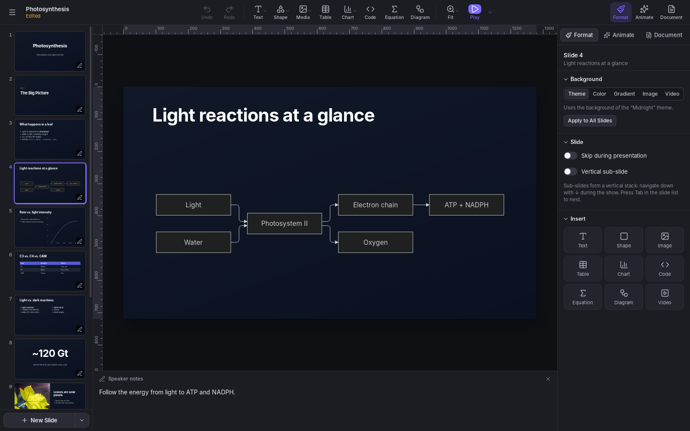
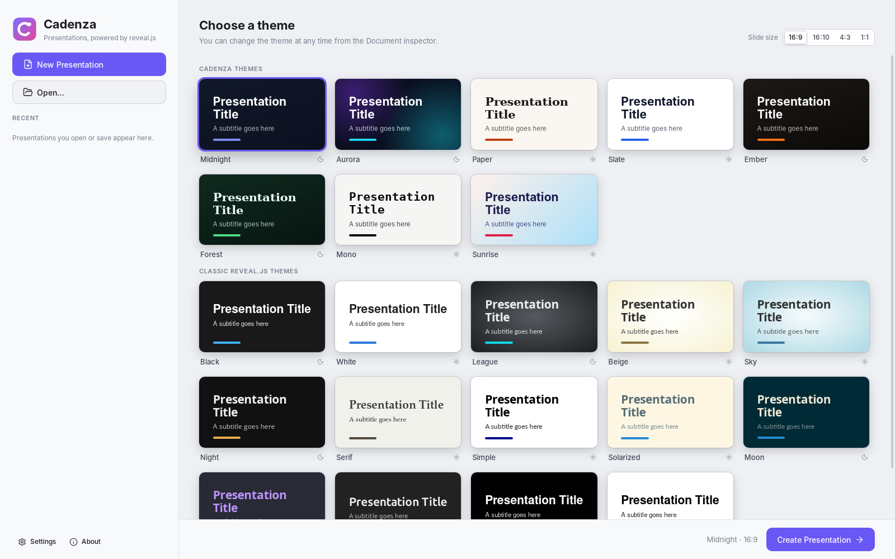
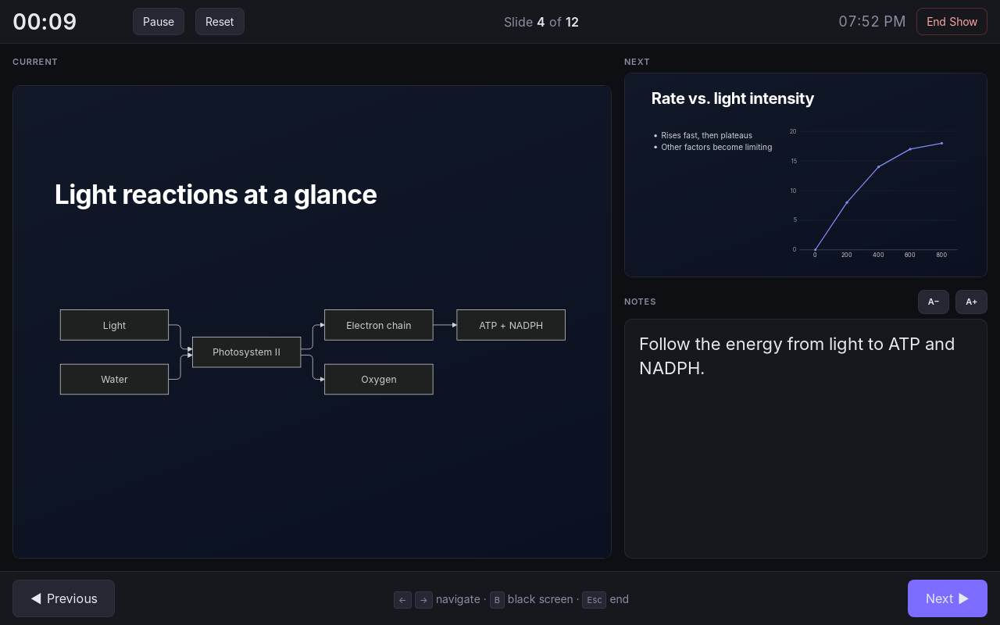

Cadenza
Cadenza is a presentation app for Linux and Windows, built on reveal.js. You build slides in a visual editor, using layouts, themes, charts, diagrams and equations, present them full screen with a presenter display, and export the result as a web page or PDF. You do not need to write HTML or JavaScript to prepare a presentation.
Your work stays in local files. A presentation can carry its images, imported videos and embedded fonts without requiring an account or an upload to a cloud service. The app is open source, built with Rust and web technologies using Tauri, and released under the MIT License.
This combination is useful for classes, seminars and technical talks. You can explain an algorithm by highlighting its lines, correct a formula in LaTeX, revise a Mermaid flowchart and publish the slides on your own website. The tools for a conventional presentation are there too: text, photographs, tables, transitions and speaker notes.

Download
Download the latest version from the Releases page on GitHub, which also lists what’s new in each version. Pick the file for your system (x.y.z is the version number):
| System | File |
|---|---|
| Windows 10 and 11 | Cadenza_x.y.z_x64-setup.exe (installer) or Cadenza_x.y.z_x64_en-US.msi (MSI package) |
| Ubuntu, Debian and derivatives | Cadenza_x.y.z_amd64.deb |
| Fedora and openSUSE | Cadenza-x.y.z-1.x86_64.rpm |
| Linux (AppImage) | Cadenza_x.y.z_amd64.AppImage |
There is no macOS version any longer. Versions 0.2.0 to 0.3.2 had one, but it could not be tested on a Mac on a regular basis.
Installing
The packages contain the app; the installation steps depend on your system. On Linux, choose one of the alternatives below for your distribution or the package you downloaded.
- Windows: run the installer. It installs Microsoft WebView2 if needed.
- Linux: install the package from a terminal, in the folder you downloaded it to, replacing x.y.z with the version you downloaded. The AppImage needs no installation: make it executable and run it.
sudo apt install ./Cadenza_x.y.z_amd64.deb # Ubuntu, Debian
sudo dnf install ./Cadenza-x.y.z-1.x86_64.rpm # Fedora
sudo zypper install ./Cadenza-x.y.z-1.x86_64.rpm # openSUSE
chmod +x Cadenza_x.y.z_amd64.AppImage # AppImageThe Linux and Windows versions are 64-bit (x86-64). The .deb and .rpm packages need WebKitGTK 4.1, which comes with Ubuntu 22.04, Debian 12, Fedora 37 and newer.
The first time you open it
The installers aren’t code-signed yet, so on Windows SmartScreen may warn that the app isn’t recognized. Click More info > Run anyway.
Updating
From version 0.3.3 on, Cadenza keeps itself up to date. When it starts, it looks for a newer version and offers to download and install it with the same kind of package; on Linux, the .deb and .rpm updates ask for your password. The app then restarts and reopens the presentations you had open, unsaved changes included. Earlier versions can’t do this, so install 0.3.3 or newer by hand once.
Features
The editor covers both preparing content and presenting it live. You can start with a layout, arrange objects freely, and keep the visual material and your speaker notes in the same file.
Editing
There are 12 layouts, including title, section, two columns, quote, big number and code. They provide a starting point, and objects can be moved, resized, duplicated, aligned and locked. Rulers, draggable guides, smart guides and a snapping grid help keep elements aligned.
Formatting can apply to an entire text box or just the selected passage: font, size, color, bold, italic and underline. Tables have editable cells and adjustable row and column counts. Undo, redo and the command palette (Ctrl+K) support everyday editing.
Charts and maps
Charts are edited in a data grid and drawn as SVG, which stays sharp when resized. There are 19 types: column, stacked column, bar, stacked bar, line, dot plot, area, stacked area, streamgraph, pie, donut, treemap, parliament, scatterplot, heatmap, candlestick, Sankey, network and geographic map.
They cover anything from comparing categories to showing flows between entities or the distribution of seats in a parliament. Sankey and network charts use source, target and value relationships. For maps, you choose the world, a continent or a country’s administrative divisions, then assign values to regions by name or code. Geographic boundaries come from Natural Earth.
You can also start from the data: paste cells from a spreadsheet or open a CSV file, and Cadenza shows a preview of every chart the data can make. It guesses which columns hold labels, values, groups and error bars, and you can change what each column means. For scientific figures, charts also take error bars (± an amount, separate amounts below and above, or lower and upper ends), value axes with ends of your own, axis titles, reference lines and point shapes.
During a presentation, a chart can build in stages: one series at a time, one pie slice or one party in a parliament chart. This lets the visual follow the explanation without showing every data point at once.
Code, equations and diagrams
Code blocks have syntax highlighting, line numbers and step-by-step line highlights. In a programming class, for example, you can keep the same code on the slide while directing attention to different parts as you advance.
Equations use LaTeX with KaTeX, either as separate objects or within text, as in $e^{i\pi}+1=0$. The expression remains editable through its source. Support follows KaTeX’s mathematical typesetting capabilities; this is not a compiler for complete LaTeX documents.
Diagrams use Mermaid: flowcharts, sequences, timelines, mind maps and other formats. Changing a label or a relationship means editing the diagram’s description and rendering it again. This makes it easier to revise a technical explanation without rebuilding an image in another program.
Design
Cadenza includes 22 themes: eight of its own plus the classic reveal.js themes. The Theme Builder lets you define a look, reuse it in other presentations and share a .cadenza-theme file with its fonts embedded. You can also export the theme as reveal.js CSS or add custom CSS to a particular presentation.
Animations include step-by-step builds, transitions and Magic Move, based on reveal.js auto-animate. You can also draw motion paths on a slide, using straight segments or curves. These tools let you reveal an explanation gradually or follow an object’s change of position.

Media
You can insert images and videos from your computer or search the Media Library. Openverse and Wikimedia Commons do not require an API key; Pexels, Pixabay and GIPHY use keys configured in the app. Usage terms vary by provider and file: check the license and keep any required credits.
The search also accepts an image address, a Wikimedia Commons or Wikipedia file page, or a web page with a preview image. Wikimedia files bring their author and license information with them. For YouTube and Vimeo, you can paste a link or browse the service and insert the chosen video. These videos still depend on the service and your connection; saving the presentation does not turn them into local files.
Live Camera places the camera feed on a slide as a rectangle or circle, with optional mirroring. It runs in the audience window while presenting in Cadenza.
Presenting and sharing
The presenter display brings together the current slide, next slide, notes, timer and clock. With two monitors, you can keep these controls on one screen and show the slides to the audience on the other. With one screen, X switches between the presentation and the presenter display. In a video call, share only the presentation window to keep your notes out of the broadcast.
The teleprompter uses the current slide’s notes and follows slide changes. You can move it, resize it, pause scrolling and adjust speed, font, text size, spacing, colors and transparency. It also has mirroring for teleprompter glass and a reading line. It belongs to the presenter display and is not drawn in the audience window.
Beyond the horizontal sequence, vertical sub-slides let a topic have a deeper sequence beneath it. Skipped slides keep supporting material in the file, and auto-advance supports presentations that need to run unattended. If you start with text, you can import reveal.js-style Markdown and continue editing visually.

Languages
The interface is available in Arabic, Bengali, Chinese (Simplified), Dutch, English, French, German, Hindi, Italian, Japanese, Polish, Portuguese, Portuguese (Brazil), Russian, Spanish and Turkish. English is the default; change it in Settings > Language.
Cadenza, Keynote, PowerPoint and Google Slides
All four apps cover the basic work of building and presenting slides. The differences become clearer when you consider where the file lives, how technical content is edited, how the presentation will be distributed, and whether other people need to work on it at the same time.
This comparison was reviewed on October 15, 2026. It covers Cadenza 0.3.3, Keynote for Mac, Microsoft 365 PowerPoint for desktop, and Google Slides in the browser; each product family’s web and mobile editors have their own row. Yes means built-in support; -- means no native support is documented for that function within this scope. Plan, platform, service and add-on requirements are noted in the cells. You may still be able to reproduce a result using images, external tools or extensions.
| Feature | Cadenza | Keynote | PowerPoint | Google Slides |
|---|---|---|---|---|
| Text, images, shapes and tables | Yes | Yes | Yes | Yes |
| Themes and layouts | Yes | Yes | Yes | Yes |
| Charts with editable data | Yes; 19 types | Yes | Yes | Yes; data in Sheets |
| Transitions and object animations | Yes | Yes | Yes | Yes |
| Speaker notes and presenter view | Yes | Yes | Yes | Yes |
| Yes; printing | Yes | Yes | Yes | |
| Desktop app | Linux and Windows | macOS | Windows and macOS | Browser editor |
| Offline editing | Yes | Yes | Yes; after installation and activation1 | Yes; requires setup beforehand1 |
| Open-source software | Yes; MIT | --; proprietary | --; proprietary | --; proprietary |
| Equations from LaTeX | Yes; KaTeX | Yes; LaTeX and MathML2 | --; equation editor with UnicodeMath2 | --; through an add-on such as MathType2 |
| Code with syntax highlighting and step-by-step line highlights | Yes | -- | -- | -- |
| Mermaid with editable source | Yes | -- | -- | -- |
| Import of reveal.js-style Markdown | Yes | -- | -- | -- |
| Sub-slides with vertical navigation | Yes | -- | -- | -- |
| Custom CSS per presentation | Yes | -- | -- | -- |
| Teleprompter with automatic scrolling | Yes; while presenting | --; manually read notes | When recording on Windows3 | In Google Vids, for recording3 |
| Live camera inside a slide | Yes; when presenting in the app | Yes | Yes; Cameo | Speaker spotlight; eligible accounts |
| HTML for hosting on your own server | Yes; single file or folder | Yes; HTML export | --; no direct HTML export | --; Google-hosted publishing4 |
| Open and export PPTX | -- | Yes; conversion | Yes; native format | Yes; import/export |
| Simultaneous editing by multiple people | -- | Yes; iCloud5 | Yes; OneDrive/SharePoint5 | Yes5 |
| Review comments | -- | Yes | Yes | Yes |
| Web or mobile editor | -- | iCloud; iPhone and iPad | Web; Android and iOS | Web; Android and iOS |
| Record the presentation as video | -- | Yes | Yes | Through Google Vids; eligible accounts |
General features and platform availability are documented in the Keynote, PowerPoint and Google Slides guides. For opening PowerPoint files in Keynote and exporting them again, see Apple’s supported formats.
What Cadenza does not yet offer
Format and collaboration limits matter as much as editing features when choosing a tool. Version 0.3.3 has no PPTX import or export, real-time coauthoring, review comments or shared cloud version history. Sending someone a .cadenza file lets them work on a copy; it is not the same as editing one document together.
There is also no web editor, mobile app or built-in video recording of a presentation. Exported HTML can be presented in a browser, but does not provide the Cadenza editor. Recording a class requires a screen capture tool. The app’s live camera and teleprompter do not constitute a recorder.
Privacy
Cadenza does not require an account to create, edit, save or present local files. Online features, such as font downloads, media searches and playback of external videos, contact their respective services when used. The one exception is the check for updates: when it starts, Cadenza downloads a small file from GitHub naming the latest version, and sends nothing about you or your presentations. You can turn it off in Settings > Updates.
API keys stay in your system’s credential store: Secret Service on Linux and Credential Manager on Windows. They are not saved inside presentations.
Files
The editing file and the distribution formats serve different purposes. Keep the .cadenza file to continue working; choose HTML to distribute a navigable presentation and PDF for a static copy.
.cadenza: a presentation, stored as a zip archive withdeck.jsonand the media and fonts it uses..cadenza-theme: a theme from the Theme Builder (JSON, with its fonts embedded).- Single-file HTML: packages the presentation and its embedded resources in one
.htmlfile that opens in a browser without Cadenza installed. References to external services still depend on the network. - HTML folder: separates the page and its resources for publication on your own server or a static hosting service.
- PDF: uses the system’s print facility to produce static pages. Videos, transitions and interactions do not remain playable features.
HTML keeps the navigation and presentation features supported by the browser. It does not replace .cadenza as the editing format, and there is no import of arbitrary HTML to reconstruct a project. For material with videos or particular fonts, check the result on the computer and browser that will be used to present it.
Source code
Cadenza’s source code is on GitHub, along with instructions for building from source, the changelog and the contribution guide. Bug reports, suggestions and translations are welcome in the issues.
Cadenza is released under the MIT License. It includes reveal.js, KaTeX, Mermaid, highlight.js, Preact, htm and Lucide icons, each under its own license.
The descriptions of Cadenza on this page follow its README and version 0.3.3 changelog. The references below explain the conditions in the comparison.
-
Microsoft documents offline use after installation and activation, with periodic reconnection for Microsoft 365. Google Slides requires offline access to be set up beforehand, including Chrome or Edge and the Google Docs Offline extension on a computer. ↩ ↩2
-
Keynote accepts LaTeX and MathML. Microsoft distinguishes Word’s LaTeX support from the UnicodeMath available in other Office apps. In Google Slides, MathType is a third-party add-on with its own subscription terms. ↩ ↩2 ↩3
-
Microsoft describes automatic scrolling in the Teleprompter recording view on Windows. The Google Vids studio also offers scrolling, but it is a separate app, not Slides’ live presentation mode; service availability depends on the account. ↩ ↩2
-
Google’s Publish to the web publishes a presentation on its service or provides an embed for a page. PowerPoint can also be embedded through OneDrive. These routes depend on the provider’s hosting; they are not equivalent to exporting the complete presentation to your own server. ↩
-
See Keynote collaboration with iCloud, Microsoft 365 coauthoring, comments and history, and Slides sharing and version history. File synchronization and local recovery are not equivalent to coauthoring. ↩ ↩2 ↩3